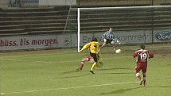
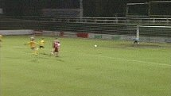
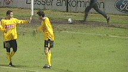
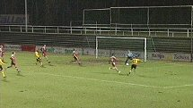
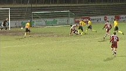
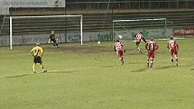
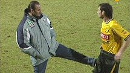

|
1. FC Köln - Roda JC (2-3) 18 januari 2005 |
1. FC
Köln - Roda JC (2-3) 18 januari 2005

De voor vanavond geplande oefenwedstrijd tussen Roda
JC en FC Köln
werd in Keulen Am Geissbockheim gespeeld zonder toeschouwers. In
Kerkrade was het veld onbespeelbaar wegens de hevige regenval. Hier
scoort Springer 1-0, (14').

Omdat er niet op tijd voldoende politie kon worden gemobiliseerd
werd
de wedstrijd zonder publiek gespeeld.
Bodor maakt de gelijkmaker in de 30e minuut.

1-2 door Colinet, (68').

Bodor knalt 1-3 in het net, (74').

Kah lijkt een overtreding gemaakt te hebben binnen de zestien.

Federico schiet de penalty hoog in het midden: 2-3.

Amicale trap voor Senden van zijn ex-trainer. Of Huub Stevens
naar
Roda komt blijft ook na vanavond voorlopig ongewis.